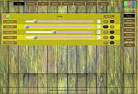
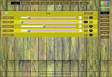
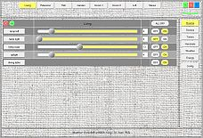
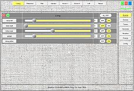
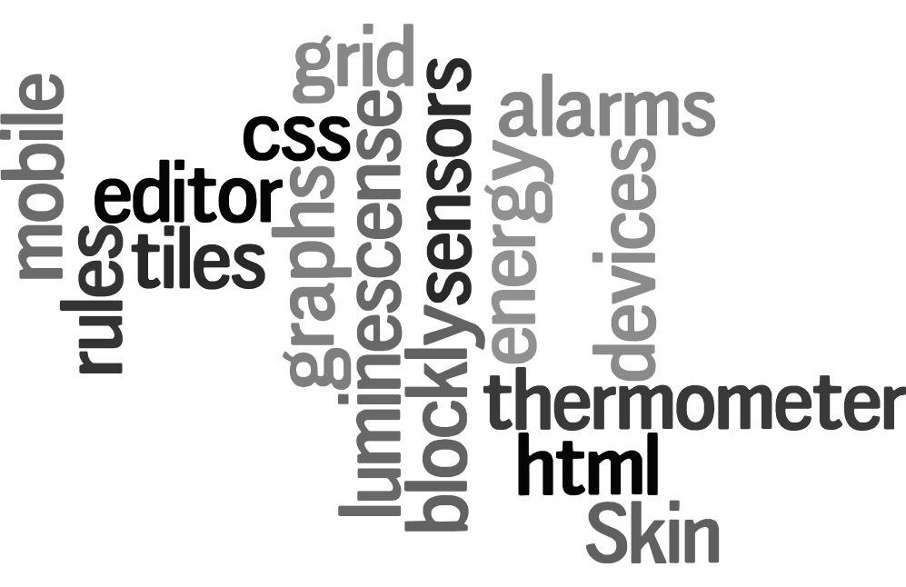
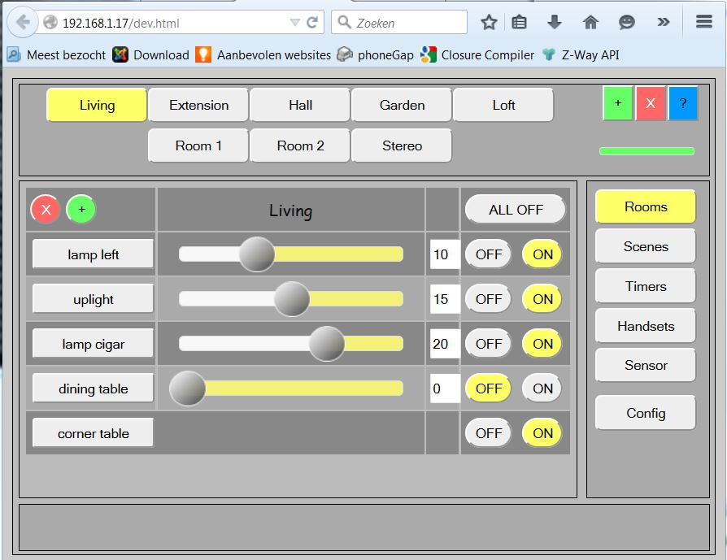
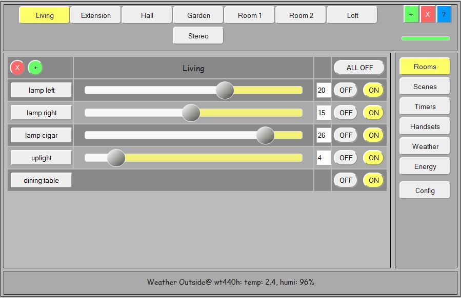

{kind=link}
 
LamPI is my DIY Home Automation project. It consists of
The full table of contents for ALL LamPI documentation is <HERE>. Please start reading on that page when you finished reading this page.

Click on any of the images here to see a large version of the screenshot. LamPI Gui layout scales with your screen, and there are many ways to configure the LamPI screens to your taste. You can customize the Look and Feel with .css Skins.

You can find LamPI GIT repository on https://github.com/platenspeler, and the documentation on http://platenspeler.github.io
LamPI is a Home Automation project for switching equipment in your house over 434 MHz transmitters/receivers on a RaspberryPI. As of release 2.0 LamPI offers support for Z-Wave devices. Support for Z-Wave 868MHz devices is implemented with a separate Raspberry bridge computer using the Razberry board. Please read more on Z-Wave support <Here>
This is where I initially developed LamPI for. It will control your light switches and your dimmers and your other switches as well (if you want LamPI can switch your stereo or microwave too). It also controls your radiators (Z-Wave) and other devices.

The screen above is one of the main screens of LamPI, and should give you a taste of what LamPI is about. As you see, the GUI interface is designed to operate (and manage) all tasks for the connected devices and minimize the need for manual changing of configuration files etc. let alone making configuration changes at compile time.
Strting release 3.4 LamPI contains a Metro-like grid or tile interface. Although not all functions are avaiable using this interface, it does contain all devices on one screen and offers the user a selection of type of devices, locals and user selectable settings to determine what is on the screen with these tiles.
Users can change the shape an size of each of the widgets which will then allow them to make better selections of changes to the devices. Click on the image above in oder to see the same screen but then where the "corner" widget has been resized to make changes to the device.
LamPI GUI works fine over mobile. However, you may want to select a layout which is specially designed for mobile devices. It is easy to work on a mobile devie if you create a mobile.html file or so which will do all the layout stuff for you. The LamPI mobile layout makes use of jQuery Mobile libraries and can be used on any screen (mobile or PC screen).
Here you see an image of the mobile screen (on my PC). The GUI will scale to the device that you are using. As you can see, the menu on th eright has moved to the top row and its functions are now selectable with a (one) menu button. In principle, all colors (also those used by jQuery Mobile) can be changed by the user by altering the corresponsing .css file.
The mobile interface works better with touch devices such as mobile phones etc than the classic interface which is optimised for mouse usage. Other than that, both work OK on almost every machine and it is a matter of taste which interface has your preference. On my iPad I still prefer the classic jQuery UI interface over the mobile interface.
Recently, support for weather sensors was added to LamPI. In principle the LamPI-receiver process can be taught to detect a wide variety of temperature, humidity, rain and wind sensors. For the weather gauge widgets I used existing libraries such as the "steel" library of Gerrit Grunwald and Mark Crossley. If the configuration file contains definitions for supported weather sensors, then the menu will automatically display an option to view/select weather info.
Actually, what you see below is just a small example of what "steel" can do for your project. The library is highly customizable so you can make your own background, color an other settings if you like.
What you see below is weather support. It does support weather sensors of UPM that transmit temperature and humidity values back to the LamPI-deamon.php process which are then broadcast to all connected clients. And as you see, the client will display the temperature (top row) for outside, the extension of our home and the living room. On the second row it will display the humidity for these three rooms. The definitions of sensors are found in the configuration file "database.cfg".

Apart from the latest sensor info, or even near-real-time information received, I like to add support for historical charts etc. At the moment, all sensor readings are stored in a log file, and also in the MySQL database.
In case I missed something, please send me an email or make a note on this page. For the moment I'm the only author of LamPI so it can take a few days before I answer.
For general sensors and the special energy sensors LamPI has a separate program to chart/graphs the various sensors over time. When clicking on the dials of the sensor screen in LamPI GUI, a new screen opens where users can specify their own combination of sensors and make a graphs of these sensors (plotted against time).

As from LamPI release 3.3 we offer a set of Blockly elements to help the user define his/her own rules in LamPI. Read the separate section on Rules <HERE>. LamPI Rules offer the use a graphical interface to define rules based on temperature, humidity, time of day, Sunset or any other sensor value and based on these reading define actions in LamPI to be taken.
All sensors can be used in queries and actions include setting devices values , showing alerts on the screen or logging values in the log file.
The content of the screen above was enlarged little bit to enhance redibiliy. The message in the message area would normally fit.
The goal of my project was to provide an easy interface to the family to control the lights in our house. We had klikaanklikuit.nl switches and we have an iPad (and some Android phones and Laptops) and want to control our light switches with an easy-to-use GUI interface. This meant that I needed at least 2 components: A component that would control transmitter and receiver and handle low-level device commands, and a GUI in JavaScript/jQuery that would handle the human interaction. In order to store configuration information and for timing commands and unattended use, we would also need a daemon process serving in the background as well as a database (written in MySQL) to store configuration information.
Although I would expect that you like to use the complete package, it is quite good possible to only use the RaspberryPI transmitter and receiver shell executables (see below)
<More information is available HERE>
LamPI contains 7 main screens: Rooms, Scenes, Timers, Handsets, Weather, Energy and Config. For every screen I have written a few pages that contain instructions on common tasks you will perform.
The documentation for the LamPI functions can be found on this site on the following pages.
Apart from the GUI interface, on the backend there are some other programs active: The main LamPI_daemon, some receivers (wireless and wired)
LamPI can support receiver devices (making transmitter modules for various brands is often easy). Also, several brand share almost the same protocol or work or can be made to work with minor modifications, Therefore, the list below is probably just a snapshot of a much larger list...
Note: Gateway, You need to install a separate RaspberryPI system with Razberry board for this
I did make an architecture document for LamPI which can be found <HERE>.
Click <HERE> for a list of changes made in a certain release.
Click <HERE> for a list of user stories and planned functions in next releases
Click <HERE> for a list of known issues, possible being resolved in future releases
Thanks to everybody that contributed in some way to making LamPI possible. Either by providing libraries or pieces of code, commenting by email or on a forum etc etc. Herewith a list of technology adpted (unfortunately the list will probably NOT be complete). I like to gather all info on this page, so if I forgot someone please sed me an email.
December 28, 2015
{kind=link}
{kind=link}
{kind=link}
{kind=link}